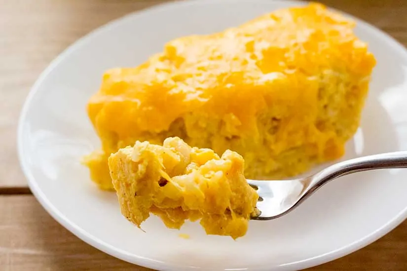
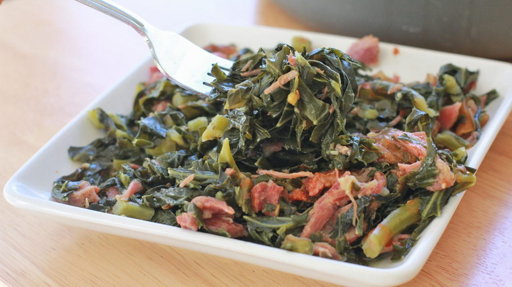

Jambalaya
12 minutes ago
20 comments
An easy Jambalaya recipe is pure comfort food filled to the brim with flavour. The aromatic trinity of Cajun/Creole cooking. Yum Yum

Macaroni & Cheese
10 minutes ago
0 comments
If you’ve got a pulse, I assume you love creamy mac and cheese. The question of ‘Why we love it’ is a real nature vs nurture debate

Collard Greens
5 hours ago
2 comments
This member of the cabbage family has an earthy flavor and a meaty, tender texture unlike any other cooked green you’ve had before. It’s the perfect side dish!

Candied Yams Dessert
1 hours ago
2 comments
Candied yams are a southern staple and soul food classic. They are the perfect combination of sweet potato, butter, sugar, and spices.